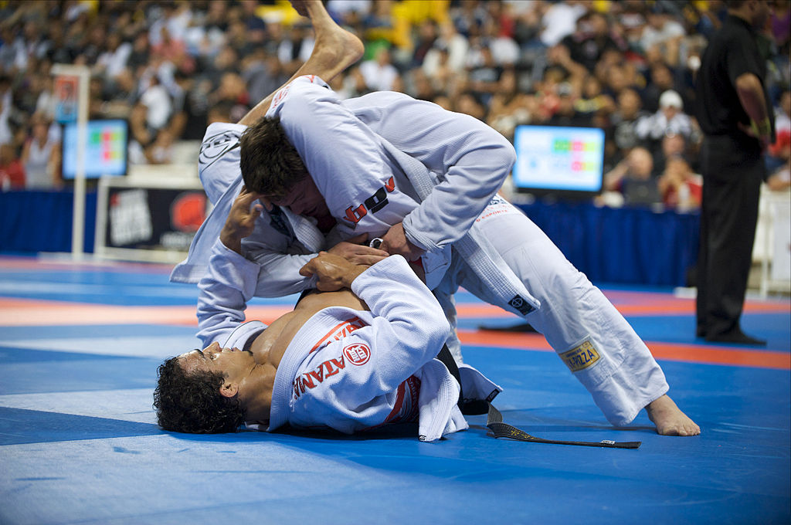
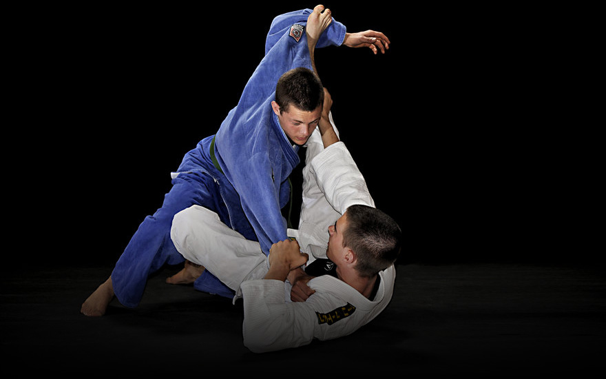

is a martial art, combat sport, and a self defense system that focuses on grappling and especially ground fighting. Brazilian jiu-jitsu was formed from early 20th century Kodokan Judo ground fighting (Ne-Waza) fundamentals that were taught to Carlos Gracie by master Mitsuyo Maeda. Brazilian jiu-jitsu eventually came to be its own art through the experimentations, practices, and adaptation from the Judo knowledge of Carlos who then passed their knowledge on to his extended family.
promotes the concept that a smaller, weaker person can successfully defend against a bigger, stronger assailant by using leverage and proper technique, taking the fight to the ground – most notably by applying joint-locks and chokeholds to defeat the other person. BJJ training can be used for sport grappling tournaments (gi and no-gi) and mixed martial arts (MMA) competition or self-defense. Sparring(commonly referred to as "rolling") and live drilling play a major role in training, and a premium is placed on performance, especially in competition, in relation to progress and ascension through its ranking system.

What are the physical benefits of training BJJ?
Self-defence is one of the major benefits of training in BJJ, and a skill that literally EVERYONE can benefit from. BJJ was created for smaller people to level the playing field against bigger opponents. This is something that can be useful in potentially dangerous everyday situations. BJJ is great and practical for this because it allows you to neutralize a fight (even in an everyday situation) without ever having to throw a punch.
Furthermore, many techniques taught in BJJ are practical ways in how to deal with “real life” street danger. These techniques include: clinching an attacker while on your feet, defending yourself on the ground off your back, defending chokes, when and how to apply over hooks and under hooks, and escaping someone who might grab you from behind. It might feel like you won’t ever need to know these self-defence methods, and maybe you won’t ever have to use them – but why take the risk? Learning these techniques can potentially save yours or someone else’s life one day.
Additionally, BJJ is great for someone who wants to improve their overall physical health. For example, BJJ will improve your cardio game easily, especially if you are not interested in traditional methods like running. Additionally, you will be improving and expanding on muscles you have probably never used before. Your warm-ups, drills, and rolling will give you an all-around body workout like no other! Many people say you can feel the physical difference in just a matter of a few weeks when you first start training in BJJ.
